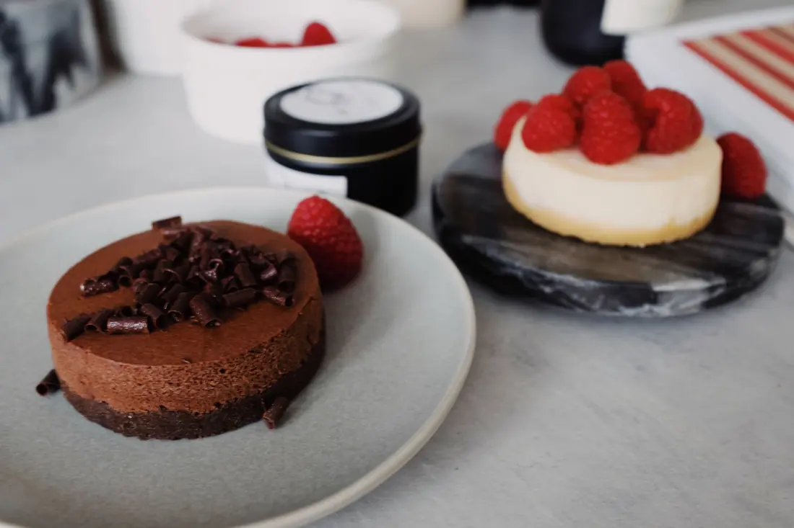

The recipe library
Explore, cook,
enjoy.
20 tested recipes for every kind of day, each with step-by-step instructions, tips, swaps and storage notes.
All recipes
 SaladsGFDF
SaladsGFDFGrilled Chicken Avocado Salad
Warm smoky chicken, cool creamy avocado.
 Main DishesV
Main DishesVCreamy Garlic Pasta
Garlicky, silky, done in 20 minutes.
 Main DishesGFDF
Main DishesGFDFHoney Dijon Sheet Pan Salmon
Glazed salmon, one pan, 25 minutes.
 SaladsVGF
SaladsVGFMediterranean Grain Bowl
Crunchy, briny, bright lunch bowl.
 SoupsVGF
SoupsVGFCreamy Tomato Basil Soup
Silky, bright, and made from pantry cans.
 Main DishesGF
Main DishesGFWeeknight Beef Tacos
Homemade taco seasoning beats the packet.
Chewy Chocolate Chip Cookies
Chewy centers, crisp edges, big chocolate.

DessertsVNo-Bake Chocolate Mousse Cake
Silky chocolate mousse, zero oven time.
 Beyond ToastV
Beyond ToastVFluffy Buttermilk Pancakes
Tall, tangy, and properly fluffy.
 Beyond ToastVGF
Beyond ToastVGFOne-Pan Shakshuka
Eggs, tomato sauce, bread for dunking.
 Beyond ToastV
Beyond ToastVBlueberry Vanilla Overnight Oats
Five minutes tonight, breakfast tomorrow.
 Beyond ToastVDF
Beyond ToastVDFSmashed Avocado Toast with Jammy Eggs
Crisp toast, jammy yolks, bright avocado.
 Beyond Toast
Beyond ToastFreezer-Friendly Breakfast Burritos
Eight hot breakfasts, waiting in the freezer.
 Beyond ToastV
Beyond ToastVCustardy Cinnamon French Toast
Crisp edges, custardy centers, warm cinnamon.
 SoupsVGF
SoupsVGFRoasted Butternut Squash Soup
Roasted, silky, and deeply savory.
 SoupsDF
SoupsDFLemon Chicken Orzo Soup
Bright, lemony chicken soup in one pot.
 Main DishesDF
Main DishesDFSticky Honey Garlic Chicken Thighs
Sticky, garlicky, and ready in 35.
 Main DishesVGF
Main DishesVGFCreamy Mushroom Risotto
Earthy, creamy, worth every stir.
 SaladsVGF
SaladsVGFHarvest Kale Salad with Apples and Pecans
Crunchy, tangy fall salad that holds up.
 DessertsV
DessertsVEasy Apple Crisp
Jammy apples, crunchy buttery oat topping.
No recipes match those filters yet.
Can't decide what to cook?
Let us pick a recipe for you. No scrolling required.